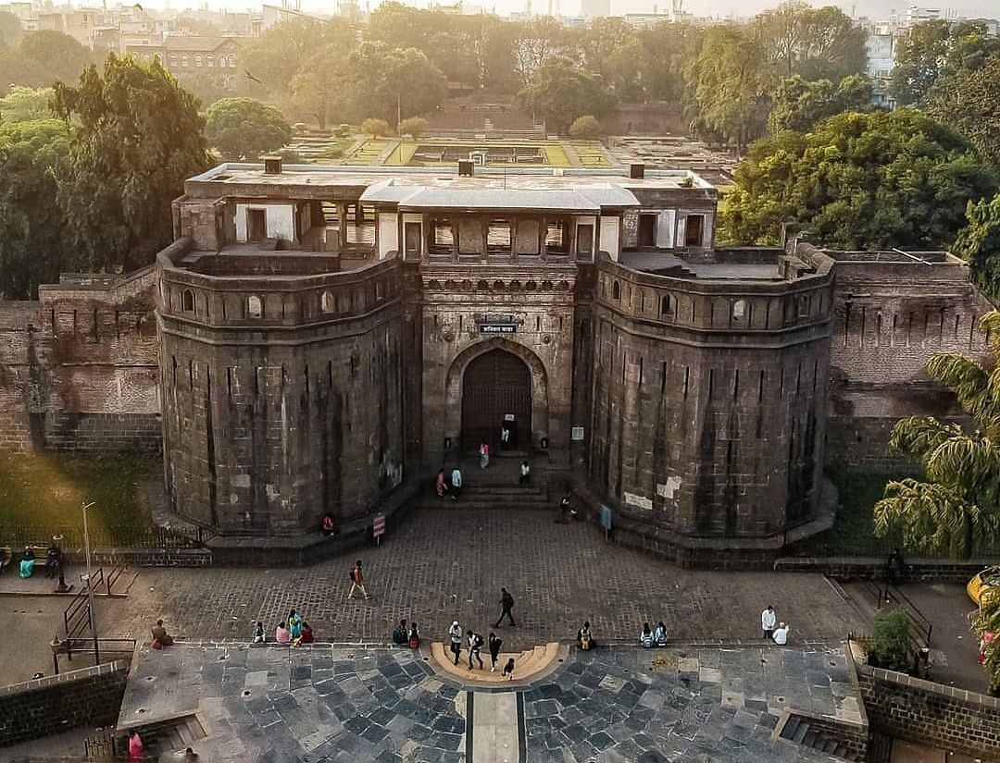

पुणे हे भारताच्या महाराष्ट्र राज्यातील एक महत्त्वाचे शहर आहे. उदयोग, माहिती तंत्रज्ञान , आर्थिक व शैक्षणिक क्षेत्रातील प्रगतीमुळे पुणे हे राज्यात मुंबई नंतर दुसऱ्या क्रमांकाचे शहर आहे. एके काळी मराठ्यांचे साम्राज्य असलेले पुणे हे समृद्ध ऐतिहासिक, सांस्कृतिक व शैक्षणिक वारसा लाभल्यामुळे महाराष्ट्राची सांस्कृतिक राजधानी म्हणून ओळखले जाते. देशातील अनेक नामांकित शैक्षणिक संस्था पुण्यात असून जगभरातील अनेक विद्यार्थी त्यांत शिक्षण घेत आहेत. त्यामुळेच पूर्वेकडील ऑक्सफर्ड किंवा विद्येचे माहेरघर म्हणूनही पुण्याची ओळख आहे. आज, पुण्यामध्ये जगातील नामांकित आई.टी. कंपन्याही आहेत; त्यामुळे या शहराला आई.टी. हब म्हणूनही ओळखले जाते. पुणे हे बुद्धिजीवींचे शहर आहे. पुण्यात वर्षभर संगीत, कला, साहित्य अशा सांस्कृतिक कार्यक्रमांची रेलचेल असते. ‘पुणे तेथे काय उणे’ अशी उक्तीही प्रसिद्ध आहे. मनमोहक हिरवेगार डोंगर, दऱ्या, जंगल, नद्या यांनी पुणे जिल्हा नटलेला आहे.येथे आधुनिकीकरणासोबतच निसर्गाचा समतोलही साधला आहे